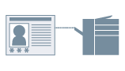

При печати выполняется управление проверкой подлинности с использованием имени пользователя и пароля.

1.
Откройте вкладку [Настройки устройства].
Нажмите [ ] (Пуск) → [Устройства и принтеры].
] (Пуск) → [Устройства и принтеры].
] (Пуск) → [Устройства и принтеры].Выше указаны действия в ОС Windows 7 и Server 2008 R2.
В ОС Windows 10: нажмите [Параметры] → [Устройства] → [Принтеры и сканеры] → [Сопутсвующие параметры] → [Устройства и принтеры].
В ОС Windows 8, 8,1, Server 2012 и Server 2012 R2: на рабочем столе выдвиньте боковую панель с правой стороны экрана и выберите пункты [ Параметры] → [Панель управления] → [Устройства и принтеры].
Параметры] → [Панель управления] → [Устройства и принтеры].
Параметры] → [Панель управления] → [Устройства и принтеры].В ОС Windows Vista и Server 2008: Нажмите [] (Пуск) → [Панель управления] → [Принтеры].
] (Пуск) → [Панель управления] → [Принтеры].В ОС Windows Server 2003 и Server 2003 R2: нажмите [Пуск] → [Принтеры и факсы] (или [Пуск] → [Панель управления] → [Принтеры и другое оборудование] → [Принтеры и факсы]).
Щелкните правой кнопкой мыши значок принтера, который Вы желаете определить → нажмите [Свойства принтера] (или [Свойства]).
Выберите вкладку [Настройки устройства].
2.
Выберите [Проверка подлинности пользователя] из списка [Управление пользователями] → нажмите [Настройки].
3.
Задавая пароль, выберите [Разрешить настройки пароля] → введите пароль в поле [Пароль].
Для подтверждения настройки устройства: нажмите [Проверка].
Для подтверждения информации по проверке подлинности при печати: выберите [Подтвердить сведения для проверки подлинности во время печати].
Для выполнения проверки подлинности на устройстве: выберите [Выполнить проверку подлинности на устройстве].
4.
Нажмите [ОК] → нажмите [Применить] во вкладке [Настройки устройства].
5.
Нажмите кнопку печати в приложении.
6.
В случае отображения диалогового окна [Подтвердить имя/пароль пользователя], подтвердите содержимое → нажмите [ОК].
Начнется процесс печати.
Поддерживаемые принтеры
Принтер, подключенный к сети
Необходимые условия
Учетная запись с разрешением на полный доступ к принтеру
Установка Canon Driver Information Assist Service (можно установить с помощью программы установки драйвера принтера)
Справки
Если в диалоговом окне [Настройки проверки подлинности пользователя] не задан пароль, введите пароль при печати.
Если в диалоговом окне [Настройки проверки подлинности пользователя] или диалоговом окне [Подтвердить имя/пароль пользователя] проверка подлинности не выполняется, см. раздел «Не удается определить состояние принтера либо использовать функцию управления именем подразделения или проверку подлинности пользователя».